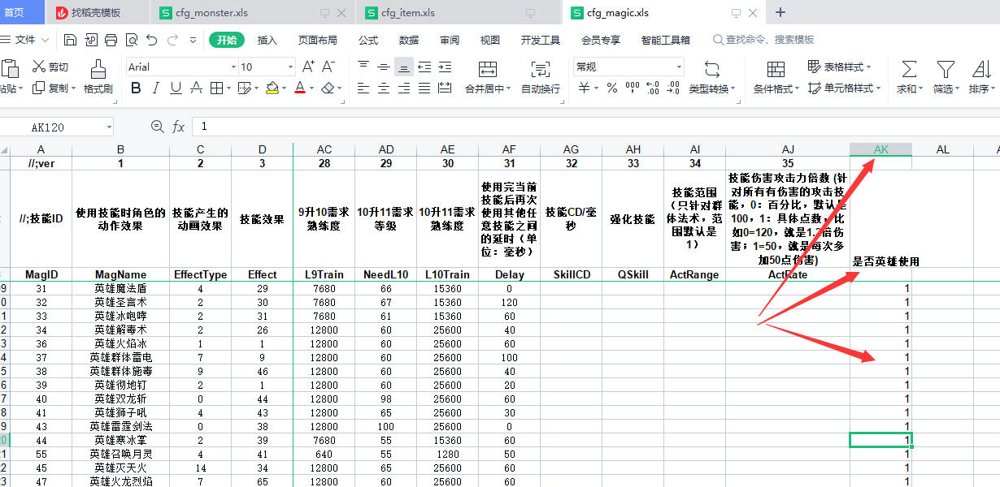
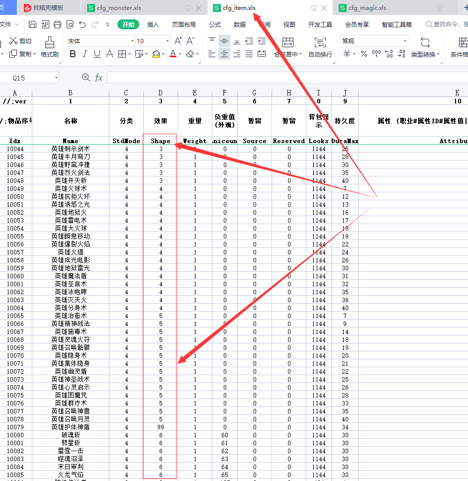

序号 字段 说明
(1)MagID
技能序号
(2)MagName
技能名字
(3)EffectType
使用技能时角色的动作效果
(4)Effect
技能产生的动画效果
(5)Spell
每次使用技能使用的魔法值
(6)Power
技能的伤害值下限
(7)MaxPower
技能的伤害值上限
(8)DefSpell
每次技能升级后增加使用的魔法值
(9)DefPower
每次技能升级后增加的伤害值下限
(10)DefMaxPower
每次技能升级后增加的伤害值上限
(11)job
可以学习技能的职业（0-战士，1-法师，2-道士）
(12)NeedL1
技能升到1级 需要玩家达到的人物等级（默认数据到15级别）
(13)L1Train
技能升到1级 需要的熟练度（默认数据到15级别）
(14)Delay
使用完当前技能后再次使用其他任意技能之间的延时（单位：毫秒）
(15)descr
简单备注
(16)MaxTrainLv
可以修炼的最高等级
技能相关表说明：
cfg_item.xls表
字段：StdMode=4为技能书
cfg_item.xls表
字段：Shape=职业要求 0=战士 1=法师 2=道士 3=英雄战士 4=英雄法师 5=英雄道士 6=英雄合击技能 99=通用技能
cfg_item.xls表
字段：Anicount=合击技能 60=战战合击(破魂斩) 61=
战道合击(劈星斩) 62=战法合击(雷霆一击) 63=道道合击(噬魂沼泽) 64=法道合击(末日审判) 65=
法法合击(火龙气焰)
不是合击技能填0 或为空
cfg_item.xls表
字段：DuraMax=等级要求
;-------------------------------------------------------------------------------------------------
cfg_magic.xls表 字段：Job=职业
0=战士
1=法师 2=道士 99=通用技能
cfg_magic.xls表 字段：NeedL1=开始修炼等级  
cfg_magic.xls表 字段：SkillCD=技能CD毫秒为单位
cfg_magic.xls表 字段：Descr=是否英雄使用
0或空=人物使用 1=英雄使用